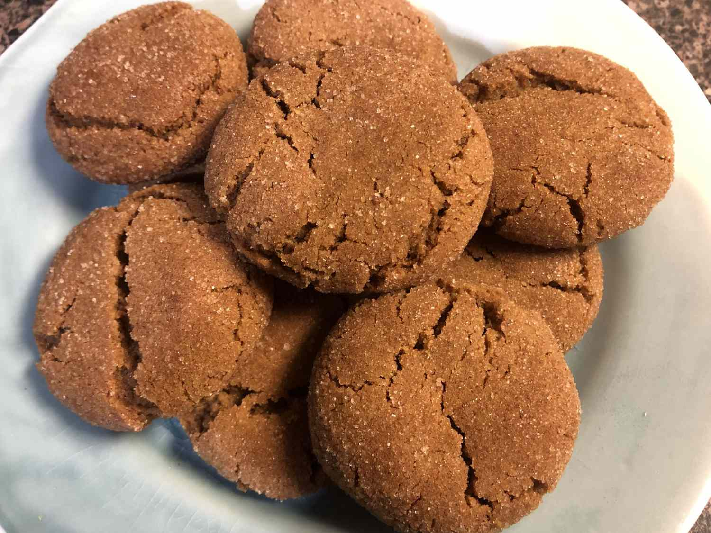

Ginger Snap Cookies

Description
A small, somewhat spicy, very crisp cookie that is
flavored with molasses and ginger.
It is typically served as a finishing
touch to a meal or as an accompaniment for
ice cream and/or sherbet.
Ingredients
- Flour, make sure to sift first
- Spices
-
Shortening is Perfered,
Butter can be subbed 1-1
- Sugar, white is suggested
- Egg, it adds moisture
-
Molasses, Dark molasses lends deep, rich,
complex flavor.
- Cinnamon Sugar, mix of Cinnamon and sugar
Instructions
- Preheat the oven to 350 degrees F (175 degrees C).
Place cinnamon sugar in a bowl; set aside.
- Sift flour, ginger, baking soda, cinnamon,
and salt into a mixing bowl.
Stir the mixture until blended,
then sift a second time into another bowl.
-
Beat shortening in a large bowl with an electric mixer until creamy.
Gradually beat in white sugar.
Add egg and molasses and beat until light and fluffy.
-
Sift 1/3 of the flour mixture into the shortening mixture; stir to thoroughly blend.
Sift in the remaining flour mixture and mix together until a soft dough forms.
- Pinch off small amounts of dough and roll them with your hands into 1-inch-diameter balls.
Place balls in cinnamon sugar and roll to coat,
then place 2-incShes apart on ungreased baking sheets.
-
Bake in the preheated oven until tops are rounded and slightly cracked, about 10 minutes, switching racks halfway through.
Cool cookies on a wire rack.
Go to Top
Back to Main Page